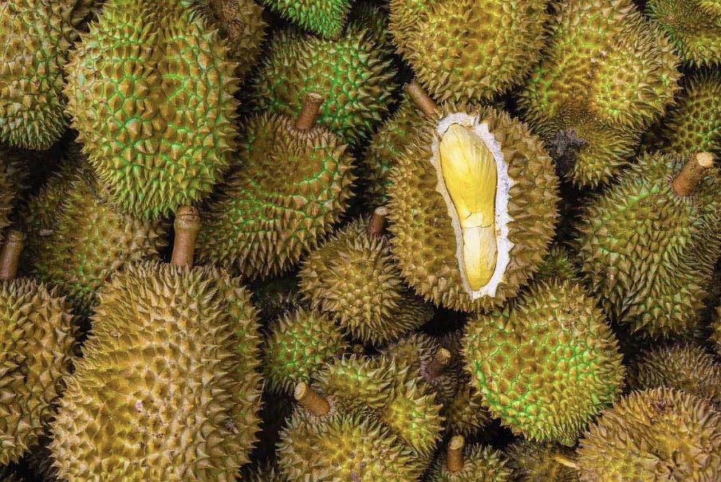
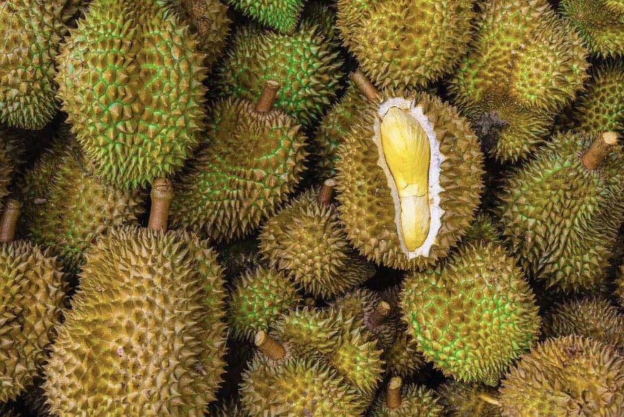

Durian is a tropical fruit distinguished by its large size, unique odor, and formidable thorn-covered husk...
Durian is a tropical fruit distinguished by its large size, unique odor, and formidable thorn-covered husk...
Despite its controversial smell, Durian is a nutritional treasure trove: rich in Vitamin C, B vitamins, and dietary fiber, which are essential for immune health, metabolism, and digestion...